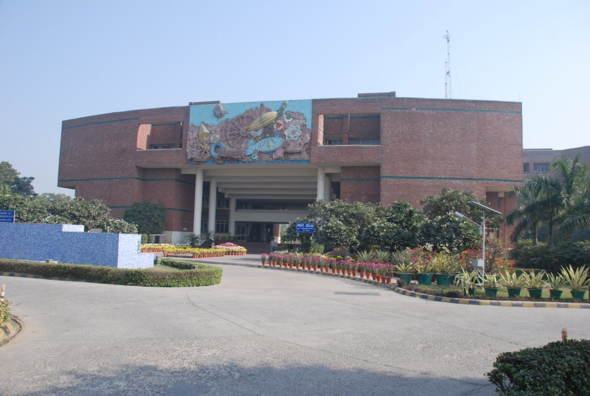
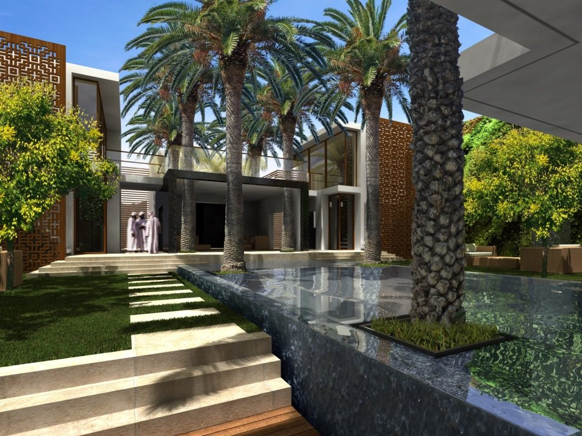
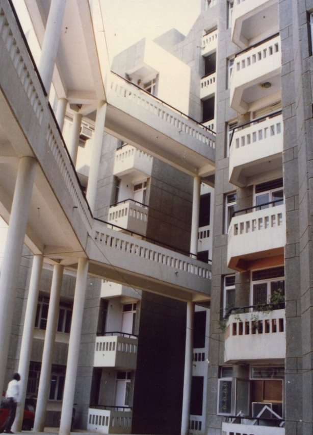
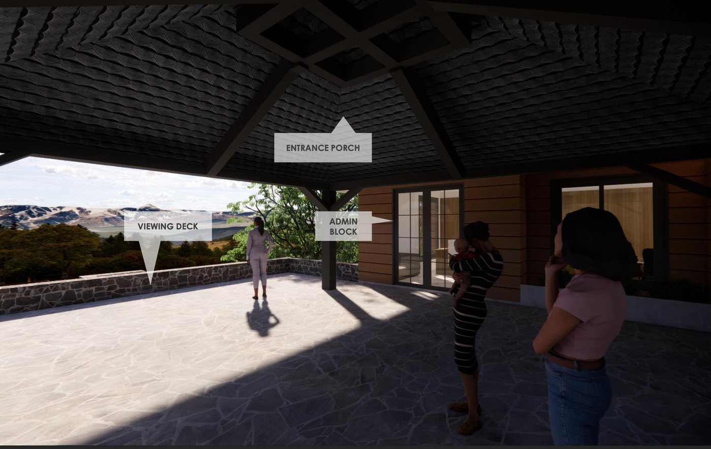
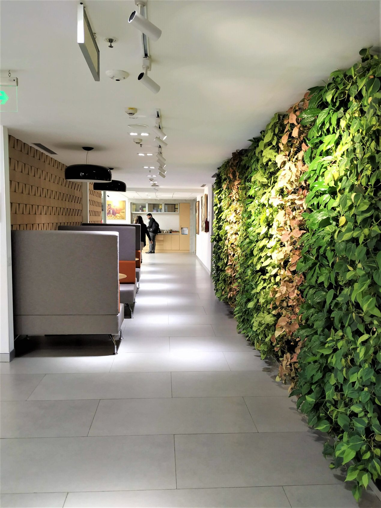
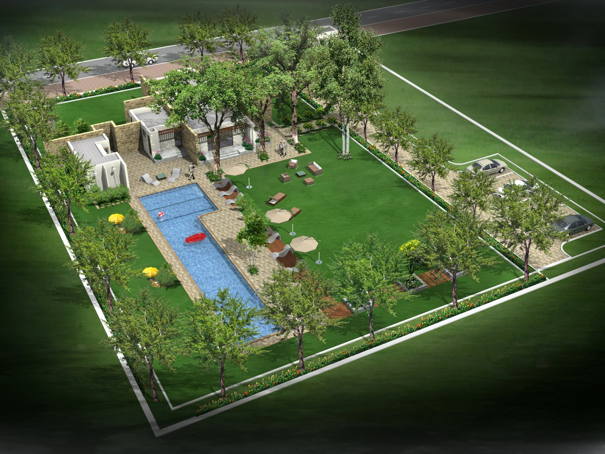
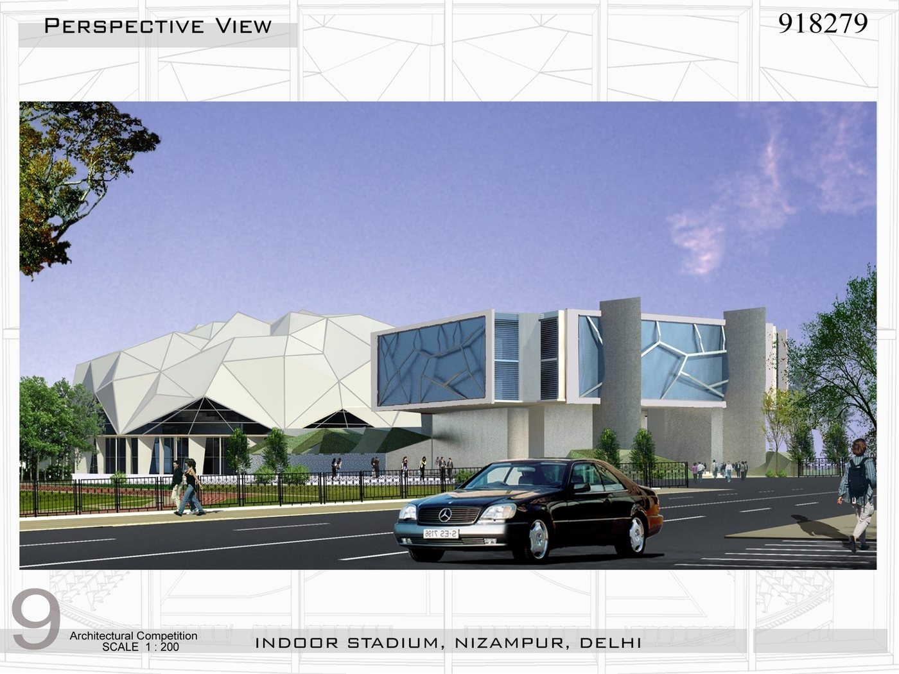

Designing with the land.
The studio
We believe development must remain compatible with human need — conserving energy, resources and heritage. Every landscape we shape begins with what the land already knows.
bbArch Landscape is the landscape architecture studio of Babbar & Babbar Architects — a practice of over 45 years, led by fellows of the Indian Society of Landscape Architects (ISOLA). Our landscape work spans public gardens and heritage-landscape conservation to institutional campuses, housing greens and riverside retreats, in India and abroad.
Because we practise architecture, planning and landscape under one roof, landscape at bbArch is never an afterthought. Nearly every building we design carries its landscape as part of the deliverable — grounds, courts, water and planting conceived together with the architecture, not applied after it.
Signature landscapes
Ground work.


Landscape commissions
Selected commissions.
- Garden of the Great Arc, Dehradun (Survey of India)
- Restoration of the Lost Gardens of Khajuraho (INTACH / INTACH Belgium)
- Indian Embassy, Muscat (Ministry of External Affairs)
- District Courts Complex, Dwarka, Papankalan (PWD, Govt of NCT of Delhi)
- Landscape Conservation, Khajuraho (INTACH / HHT Projects, UK)
- India Garden & Pavilion, Royal Flora, Bangkok (INTACH)
- Extension to The British School, Chanakyapuri, New Delhi
- DDA Community Centre, Pitampura Block K(P), New Delhi
- Landscape & Masterplanning, Jagran Public Schools, Noida & Lucknow
- Maurya Group Housing Society, Patparganj, New Delhi
- UMSS Flatted Factory Complex, Mathura Road, Okhla, New Delhi
- Local Area Plans, Vasant Vihar & Karol Bagh (MCD)
- IFC Terrace, New Delhi
- Sarada Tapovan, Rishikesh
- “Living the Living Heritage” Khajuraho Exhibition, Festival of India, Bozar, Brussels
Landscape in every commission
Buildings that grow from their site.
Across the practice's architectural work, the landscape is designed by the same hands as the building — courts, campuses, gardens and greens delivered as one composition.








